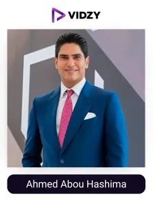
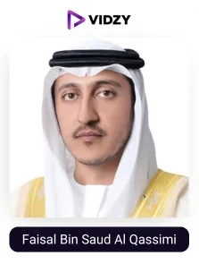
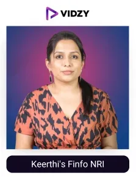
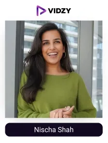

Finance is the backbone of growth and stability in our lives. It shapes how we manage our resources, make decisions, and prepare for the future. Yet many people still face challenges when it comes to handling their finances wisely.
According to a survey, only 38% of adults in the UAE are considered financially literate, indicating a big gap in understanding essential financial concepts. In this scenario, finance influencers are playing a significant role in educating them through their in-depth knowledge. They simplify money matters and share practical tips on saving, investing, and budgeting, making financial education easy and helping people to make better financial decisions.
In a country like the UAE, perfect for growing businesses, a strong financial system plays a major role. It helps attract investors and supports the growth and development of the overall economy. The finance industry in the UAE is growing continuously and is expected to reach USD 11.68 billion by 2032.
Behind this growth of the UAE’s finance industry are UGC finance creators, who educate, engage, and influence people by sharing advanced secrets of finance hacks that help them manage and invest money at the right time. Their authentic voice of content helps people make informed financial decisions, and this power of finance UGC creators, brand wants to implement in their marketing campaign to build their brand's trust among their target audience. Studies show – (Arabianbusiness) more than half of the people in the UAE are confident in taking advice from finance influencers, showing their potential in the growth of brands and the overall industry.
Recognising their strength, finance brands in the UAE are teaming with the leading UGC agency in Dubai to connect with credible and relevant influencers who create informative content aligned with the DFSA’s guidelines and thereby help companies reach their target audience and accomplish their marketing goals.
Let's move into and check out a list of the best finance influencers in Dubai, carefully listed by the top UGC agency to help brands find the right partners for powerful campaigns.
List of the Top finance influencers in Dubai, UAE
Contents
-

1. Ahmed Abou Hashima
Channel: Ahmed Abou Hashima
Followers: 33.9MEngagement Rate: 1.80%About The Influencers-
Ahmed Abou Hashima is the founder of Egyptian Steel, a well-known Middle Eastern construction company. He has made significant contributions to the Egyptian economy. Abou Hashima has established the charitable Foundation ‘Abou Hashima El Kheir’ to support social causes in Egypt.
He promotes entrepreneurship and created “Startup Power competition”, which provides opportunities for budding entrepreneurs to develop their skills and grow their businesses. He has over 31 million followers to whom he shares word-of-mouth recommendations about entrepreneurship, brand building, and local business trends.
-

2. Faisal Bin Saud Al Qassimi
Channel: Faisal Bin Saud Al Qassimi
Followers: 1.1MEngagement Rate: 1.61%About The Influencers-
Faisal Bin Saud Al Qassimi is an Emirati entrepreneur and finance UGC influencer whose recommendations and choices are trusted by the Emiratis. On Instagram alone, he boasts over 1.1 million followers. He was the first Under Secretary of the Ministry of Defence and chief of staff in Abu Dhabi. Today, Sheikh Faisal is the chairman of the board of directors of several private companies, including Faisal Holding LLC, GIBCA, Grand Stores, Hospitality Management Holdings LLC, and United Arab Bank. He has several companies and affiliates in key industrial sectors such as real estate, hospitality, tourism, trading, marketing, energy and resources, security printing, and private equity. He frequently participates in business forums, economic panels, and startup mentorship programs across the UAE. He also advocates for financial literacy.
-
3. Dr. Assad Rizq
Channel: Dr. Assad Rizq
Followers: 1.2MEngagement Rate: 1.27%About The Influencers-
Dr. Assad Rizq is a neurologist turned finance UGC content creator in Dubai who helps youth with authentic recommendations. He shares deep insights into blockchain technology, cryptocurrency, digital wallets, decentralised finance (DeFi), and personal finance. He creates content on beginner courses on digital currencies, advanced analysis, and trading through his website www.rizqholding.com. People trust him for his explainers, myth-busting facts, finance-concepts-decoded and motivational messages tied to financial empowerment. He guide new generations to decode how blockchain is changing the financial world.
-
4. Mr. Amwal
Channel: Mr. Amwal
Followers: 903KEngagement Rate: 1.18%About The Influencers-
Mr. Amwal is one of the best Finance influencers in Dubai, UAE, with a rapidly growing Instagram community of over 913,000 followers. He creates user-generated content on various kinds of investments, trading, wealth management, stock trends, asset allocation, risk management, and passive income generation, and he provides crypto alerts too. He also provides investment strategies, financial knowledge, wealth acquisition strategies, market insight, and trading signals on his Instagram handle. His audience gains financial knowledge and wealth acquisition strategies through his eyes to attain informed financial decisions.
-
5. Raji Kaippallil
Channel: Raji Kaippallil
Followers: 94.4KEngagement Rate: 1.21%About The Influencers-
Raji Kaippallil is a UK-qualified financial advisor and a prominent finance UGC content creator based in Dubai. Her financial journey began at 23 when she started investing £50 per month. She has shared her early experiences, including missteps like being misled into high-fee investments, which fueled her passion for demystifying personal finance. She shares these lessons to help others avoid similar pitfalls. Her journey into the world of finance started 9 years ago when she sought to educate myself about investing.
Through her 1:1 coaching sessions and flagship course, "Be An Investor in 6 Weeks," she has already helped 650+ individuals take control of their finances and build wealth. She has been honoured at the Annual British Bank Awards and featured in major publications such as The National in the UAE. Most recently, she was invited by The Times to coach a UK-based couple, helping them manage their finances and secure their child’s future.
She is also the founder of a fintech startup in stealth mode, aiming to further innovate in the personal finance space.
-
6. Luiz Claudio
Channel: Luiz Claudio
Followers: 1MEngagement Rate: 1.13%About The Influencers-
With 15+ years of experience in finance, Luiz Claudio, known as "iamcryptoguy," is a finance UGC content creator who focuses on cryptocurrency and blockchain education. He creates engaging content that demystifies complex crypto concepts by providing insights into market trends, investment strategies, and the latest finance-related developments in the country. His strategic posts help people decode the complexities of finance and cryptocurrency.
-

7. Keerthi's Finfo NRI
Channel: Keerthi's Finfo NRI
Followers: 397KEngagement Rate: 1.08%About The Influencers-
Keerthi creates finance-based content for Non-Resident Indians (NRIs) on topics such as investment opportunities, tax implications, and financial planning for NRIs, predominantly those residing in the UAE. She provides great information, helping her audience make informed financial decisions.
-
8. Rahul Chahal
Channel: Rahul Chahal
Followers: 692KEngagement Rate: 4.51%About The Influencers-
Rahul Chahal is a finance UGC content creator based in Dubai. His content revolves around equity funding and project finance. He shares insights and strategies related to financial planning and investment. His content is tailored for entrepreneurs, investors, and finance professionals who need insights into the intricacies of raising capital and managing large-scale financial projects. He also strategies in structuring equity deals, understanding investor expectations, and different financial aspects of project development, beautifully portrayed in case studies, real-world examples, interactive Q&A sessions, webinars, and collaborative discussions, etc.
-

9. Nischa Shah
Channel: Nischa Shah
Followers: 470KEngagement Rate: 1.98%About The Influencers-
Nischa Shah is an ex-investment banker and chartered accountant who provided resources, such as her "Intentional Spending Tracker," to assist readers in successfully tracking their money. She is renowned for providing practical tools and resources to help individuals manage their finances. One of her notable contributions is the "Intentional Spending Tracker," a tool designed that assist users in monitoring and controlling their investing habits.
Her content revolves around promoting financial mindfulness, budgeting, saving, and investing.
She creates step-by-step guides, workshops, and personalised pieces of advice.
-
10. Ali Alhamed
Channel: Ali Alhamed
Followers: 224KEngagement Rate: 1.22%About The Influencers-
Ali Alhamed is a finance UGC content creator in the UAE who shares personal stories and experiences to educate his audience better. Ali provides deep insights advocating financial literacy. He represents real-life scenarios to illustrate financial principles and lessons. He covers a range of subjects, including budgeting, saving, and investing, to educate and inspire individuals to take proactive steps towards improving their financial well-being.

Conclusion
Top finance UGC creators in Dubai, UAE, are educating people through bite-sized tips, experience-oriented personal finance expeditions, breaking down complex topics, and thus making financial literacy accessible. For brands, top UGC finance creators drive trust, conversions, and loyalty.
At our UGC agency in Dubai, we craft authentic, strategy-led, and hyper-personalised campaigns that offer superior positioning, boosted sales ROI, and more. After surveys and research, we’ve curated the list of top Finance UGC creators in Dubai—thought leaders and KOLs who are reforming the landscape with true financial stories.
So, if you need to build trust and drive engagement through authentic financial storytelling, you can partner with Dubai’s top Finance UGC creators today, only with the help of my Vidzy.